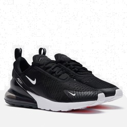

О товаре
Кроссовки Nike Air Max 270 с самой высокой на сегодняшний день вставкой Air объединяют элементы двух легендарных моделей — Air Max 180 и Air Max 93. Эта повседневная модель обеспечивает поддержку в течение всего дня. Большая вставка Max Air с подошвой из пеноматериала двойной плотности Кроссовки оформлены в сочетании черного, глиняного и золотого металлика, чтобы соответствовать цветам главного злодея. Некоторые из ключевых деталей включают лохматый задник, синие акценты на язычке и символ Риты на кнопке Pump. Завершают дизайн графические стельки.
Отзывы